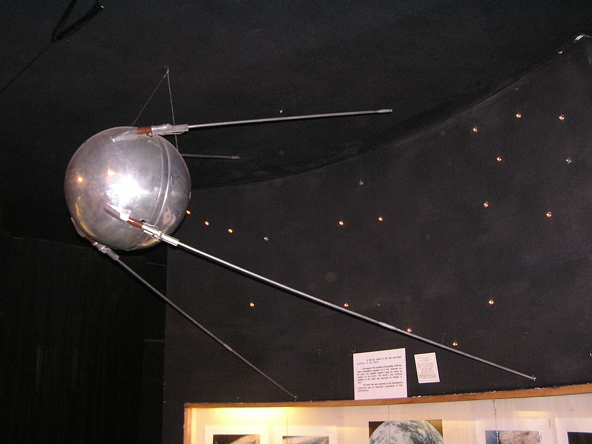

First artificial satellite.
- Launch Date:
- 4 October 1957
- Country:
- Soviet Union
- Rocket:
- Sputnik 8K71PS
- Orbital Period:
- 96 minutes
Sputnik 1's simple radio beeps, audible to amateur radio operators worldwide, triggered the Space Race and prompted the United States to found NASA less than a year later.